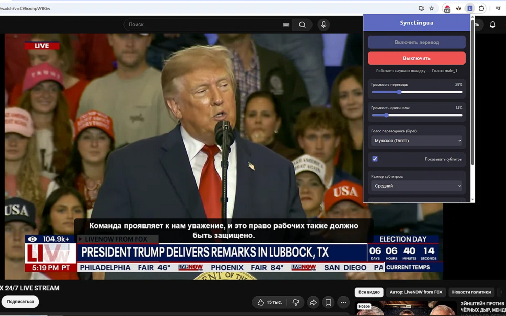
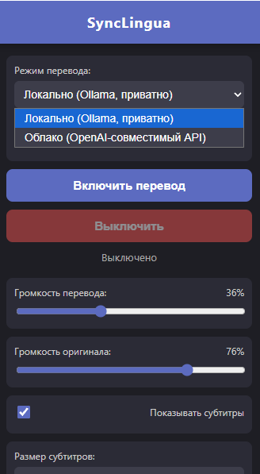

Смотрите любые англоязычные видео с синхронным переводом.
Без подписок, сложной настройки и обязательной отправки аудио в облако.
🎉 Расширение уже отправлено на модерацию в Opera Add-ons (скоро будет доступно для установки в Яндекс.Браузере в 2 клика!)
По умолчанию всё работает на вашем ПК. Ваш звук не уходит в облака и не передается третьим лицам.
Слабый компьютер? Переключитесь на облачный перевод (например, GigaChat). В сеть уйдет только текст, аудио останется у вас.
Не просто читайте субтитры. Слушайте видео на русском языке с помощью качественного синтеза речи (Piper TTS).
Работает на YouTube, Twitch, Coursera, Udemy и любых других сайтах, где есть видеоплеер.
Не нужна озвучка? Включите этот режим, чтобы переводить видео без нагрузки на процессор. Отлично подходит для слабых ПК.
Знаете, как правильно перевести специфический термин? Добавьте его в личный словарь, и нейросеть будет использовать именно ваш перевод.
Если облачный переводчик недоступен, программа автоматически переключится на локальный, чтобы ваш просмотр не прерывался.
* Наслаждайтесь просмотром. Теперь вам не нужно ничего настраивать вручную!

